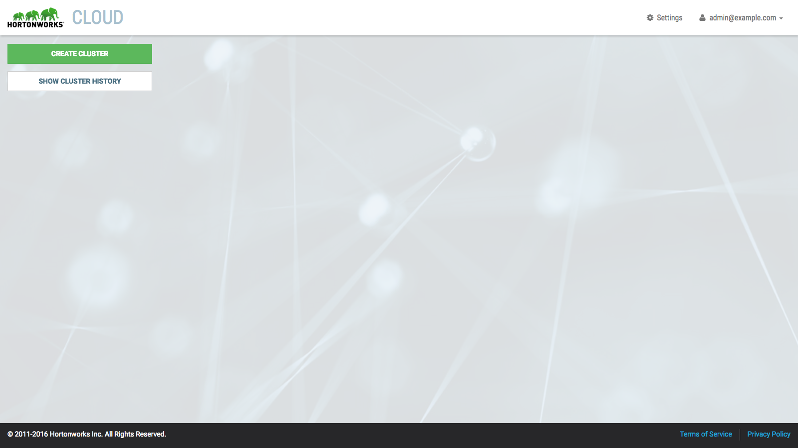

Getting Started
Use the instructions below to launch a cloud controller. Once created, you can use the controller to spin-up, use and spin-down one or more clusters.
There is an option to launch the cloud controller and a single cluster together (i.e. "Quick Launch"). Refer to Cluster Quick Launch for more information.
Setup Prerequisites
-
Review the Hortonworks Cloud Terms of Use.
-
Setup AWS Account. If you already have an AWS account, login to the AWS Management Console. Alternatively, you can create a new AWS account following the instructions provided by AWS.
-
Setup key pair. The Amazon EC2 instances that you create will be accessible by the key pair you provide during installation. Refer to the AWS documentation for instructions on how to create a key pair.
Launching the Cloud Controller
-
We provide a CloudFormation template to create the AWS resources and EC2 Instance to run the cloud controller. Click to launch the CloudFormation template.
-
Click Next. The Specify Details page is shown.
-
Enter the following Parameters.
Parameter Description SSH Key Name Name of an existing EC2 key pair to enable SSH to access the instances VPC PLACEHOLDER Remote Location Enter the CIDR mask to allow for remote access. For example 0.0.0.0/0 allows for full access. Admin Username Enter an email address to use as the admin username. Admin Password Enter the admin password. Minimum 8 characters with at least 1 uppercase, 1 numeric and 1 special character. -
Click Next. The Options page is shown.
-
Click Next. The Review page is shown.
-
Click the I acknowledge checkbox and click Create.
The Stack Name is shown in the table with a CREATE_IN_PROGRESS Status. The create process can take a few minutes and once ready, you will see CREATE_COMPLETE.
-
Once complete, browse instance created at the CloudbreakURL provided in the Outputs.
Log In
-
Browse to cloud controller instance created.
-
Log in using the Admin Username and Password provided during the controller launch.
-
On first login, you will be prompted to accept the Terms of Use to continue.
-
Once accepted, you will be shown the Hortonworks Cloud UI.
